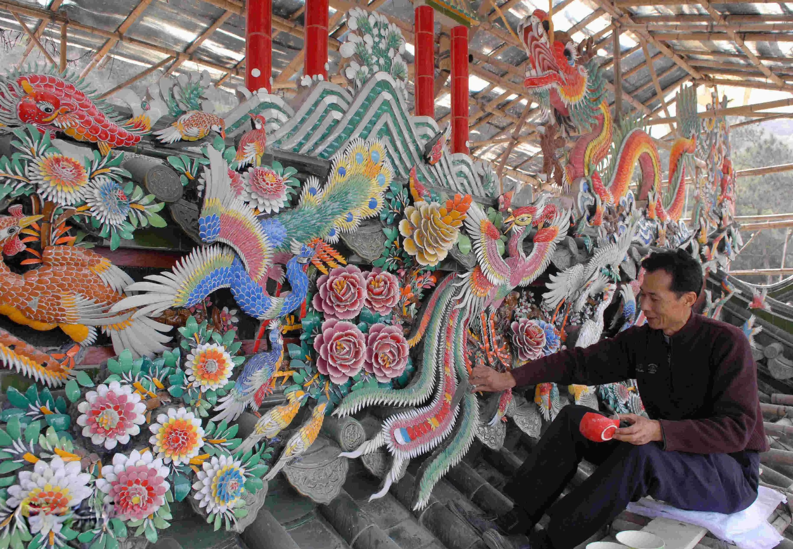
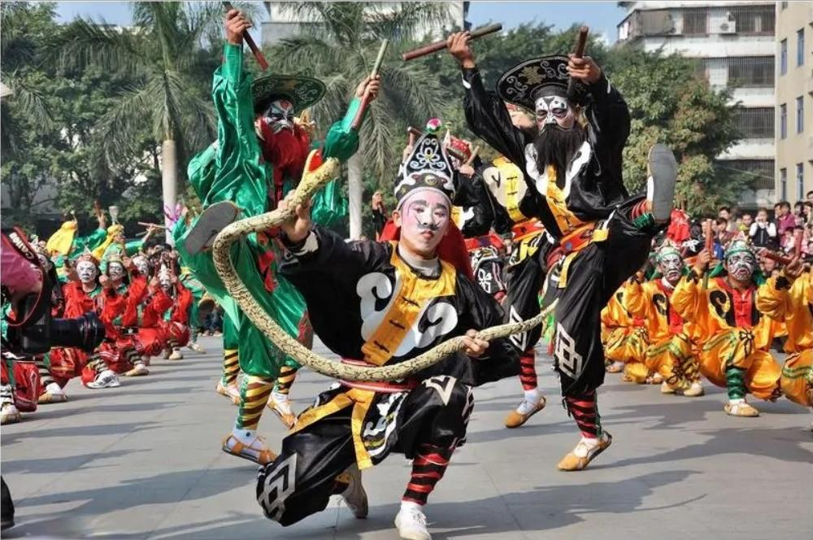
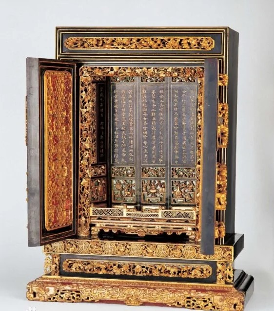
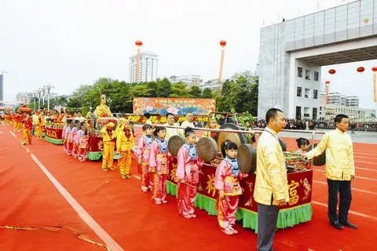
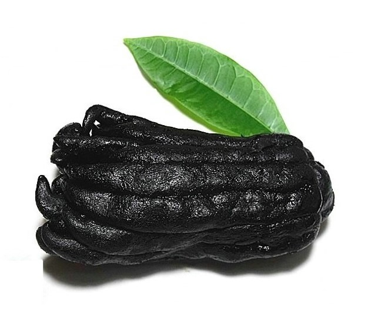
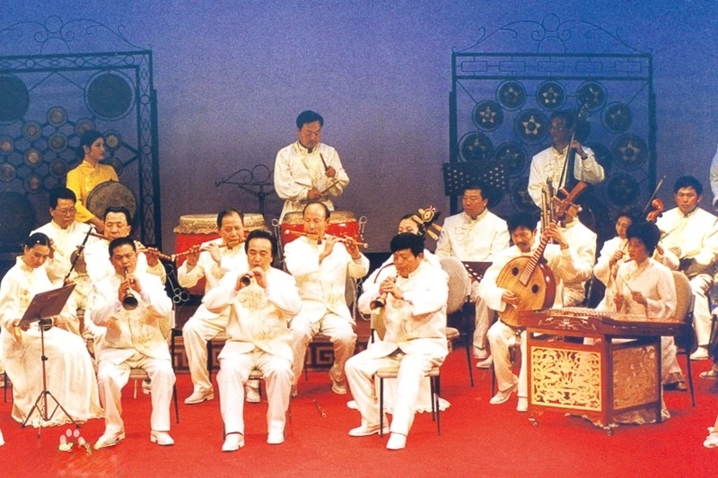
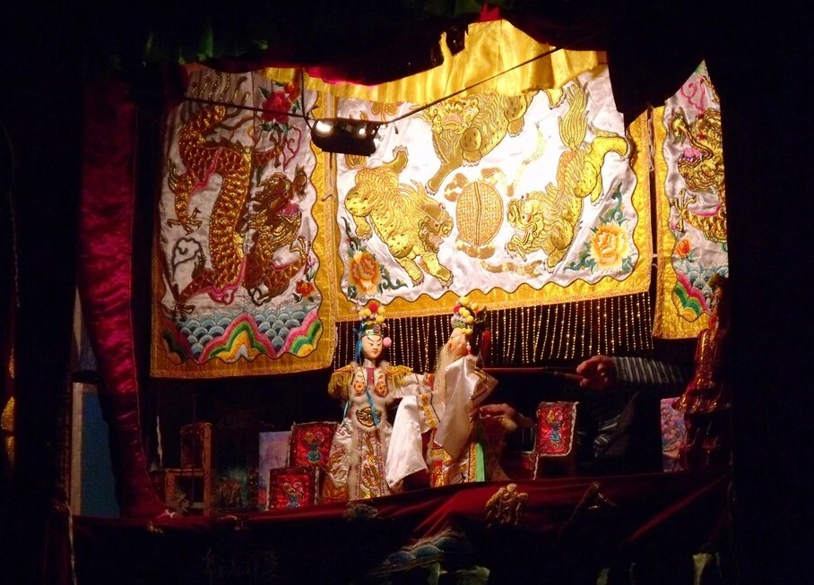

方言
普宁市境内通行潮州话（练江音和榕江音）和客家话两种方言。多数地区居民通行潮州话，使用人口约210万人，占全县总人口的84.9%； 南阳山区等乡镇通行客家话，使用人口约30万人，占全县总人口的15.1%。
潮州话
普宁人绝大多数说潮州话为主，口音三种：流沙、池尾、燎原（中东部）、洪阳（普宁北部地区及梅塘、鲤湖一带）、 潮阳（普宁东南部一带，潮普交界如：石桥头）分属潮学语言学上的练江片（流沙口音与潮阳口音）与榕江片（洪阳口音）。
客家话
由于历史上移民的原因，普宁市南阳山区的梅林镇、高埔镇、船埔镇、大坪镇、南阳乡、黄沙乡、国营大坪农场、后溪林场流行客家话； 云落镇、石牌镇和国营大池农场、马鞍山农场、华侨农场的大部分地区也流行客家话； 大南山、铁山丘陵地区以及里湖镇部分近山村寨居民，对客家人使用客家话，对潮汕话的居民使用潮汕话，呈双语现象。 双语地区的客家话由于受潮汕话影响较大，在腔调上同南阳山区的客家话有较大差别。
遗产
- 普宁嵌瓷（国家级）：作为潮州三大民间建筑装饰艺术之一，也是中华文化中稀有的特艺品种——嵌瓷为其中最负盛名者，其起源可追溯至明代万历年间， 迄今已有300多年的历史，具有色彩浓艳，质感坚实，久经风雨，烈日曝晒而永不褪色的特点，多用在祠堂、庙宇及民居“四点金”、“下山虎”等建筑物的屋顶装饰。 在普宁一些工艺者的努力下，嵌瓷也流传到台湾、东南亚一带。普宁嵌瓷工艺人才辈出，自古就有“嵌瓷之乡”的美称，国务院于2008年将其列入第二批国家级非物质文化遗产名录。
- 普宁英歌（国家级）：“北有安塞腰鼓，南有普宁英歌”普宁民间广为流传的一种民间舞蹈样式，迄今已有四百年的历史。 据考证为当时的人民群众劳动之余在习武的基础上，根据宋朝梁山泊英雄攻打大名府的故事所创造，后代代相传，发展为南方汉民族优秀民间传统舞蹈。 它被认为是扬正压邪、吉祥平安的象征，有“北有安塞腰鼓，南有普宁英歌”的美誉。 普宁英歌中，最为突出的是：流沙的南山英歌、新坛英歌、燎原街道的泥沟英歌舞、下架山镇的涂坑、咸寮、占陇镇的旱塘、南径镇的陇华、梅林镇的中央村，云落镇的云落等， 于2006年被国务院列入第一批国家级非物质文化遗产名录
- 潮剧（省级）：潮州戏，在四百三十多年的发展历史中，结合本地民间艺术，形成了自己独特的艺术形式和风格，流行于广东、福建、香港、台湾及东南亚一带。 普宁潮剧在此发展过程中也形成了自己的特色：剧本立意和艺术表现手法刻意求新，善于吸取新作曲技艺和乐器以设计出新颖动听的唱腔和音乐， 近现代甚至把声光艺术（如魔术、特技、机关布景）引入戏曲来丰富潮剧舞台效果，在潮剧上都是独树一帜。 著名的剧团有上世纪中叶普宁的梅正潮剧团和一枝香潮剧团以及解放后的普宁潮剧团。
- 金漆木雕（省级）：作为自成体系的潮州木雕工艺的一部分，普宁木雕有着领先的艺术水平和独特风格，广泛应用于建筑、家具、礼仪性器物， 在数百年的发展过程中涌现出了许多著名的匠师和名作坊。其中以溪南木雕最为出名。
- 锣鼓标旗（省级）：锣鼓标旗巡游活动有100多年的历史，大锣鼓标旗巡游活动是阵列式综艺活动，大锣鼓标旗精致，鼓乐整齐，气势宏伟，充分展示了侨乡文化风貌。
- 老香橼（佛手瓜）制作技艺（省级）：严格遵循传统而古老的加工工艺路线加工的老香橼营养丰富，风味独特，保健作用显著，具有药用和食用价值。
- 潮州音乐（省级）：包括锣鼓乐、笛套古乐、细乐、庙堂音乐、弦诗乐、汉调音乐等，有着“唐宋遗音”、“华夏正声”之称，是中国民间音乐中的瑰宝。 普宁乐风鼎盛，风味浓郁，一直是当地老百姓日常生活中喜闻乐见的娱乐，并世代相传，人才辈出，清代潮乐宗师洪沛臣更是为潮州音乐的丰富和发展起了极大的作用。 著名乐社有市区的晨风乐社、洪阳的钧天乐社等。
- 铁枝木偶（省级）：又称纸影戏，是我国传统戏曲具有代表性的古老剧种之一，传入普宁已有七百左右年。木偶戏从属地方剧种，当地皆为潮音班，仍十分活跃。






